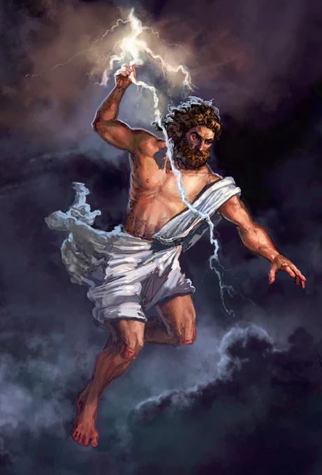
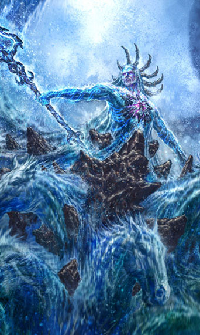
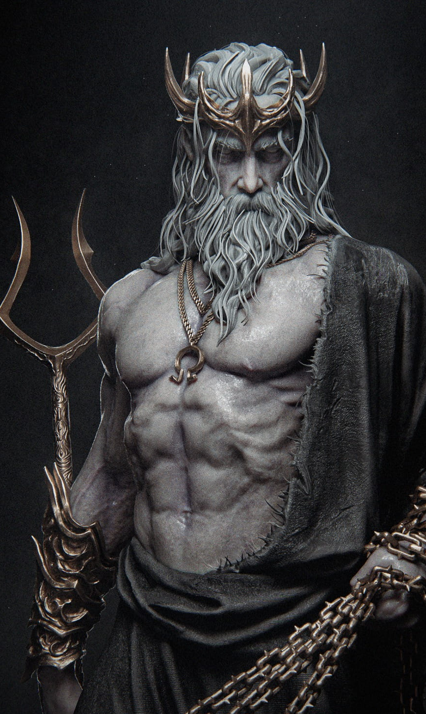
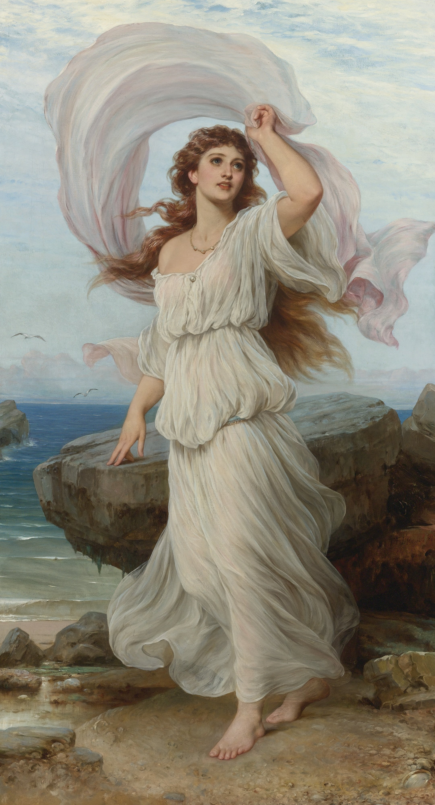
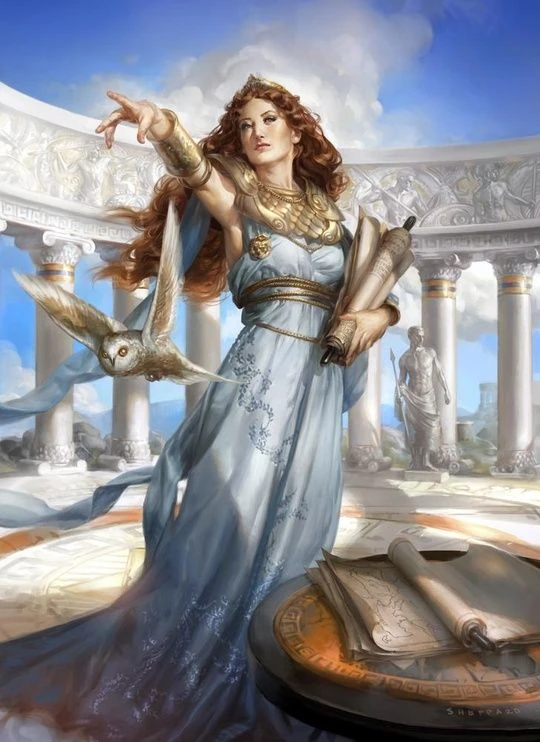
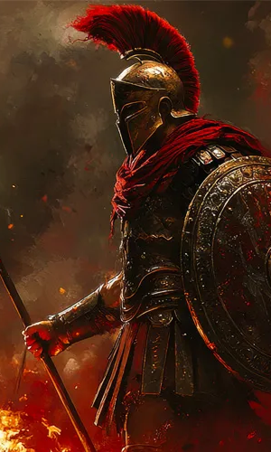
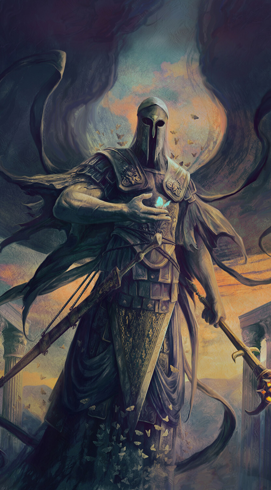
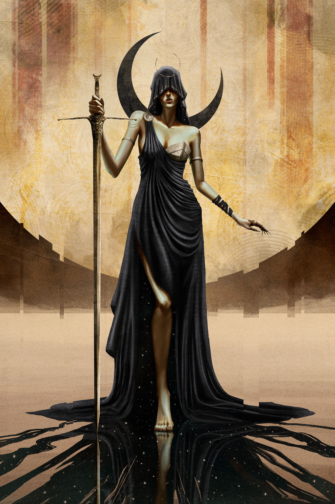
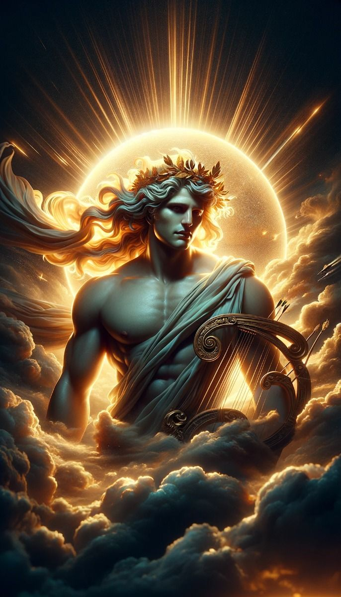

Pantheon
Norse
Greek
Egyptian
Norse
Greek
Egyptian
The Greek Pantheon
Gods and Deities

Zeus
God of the Sky

Poseidon
God of the Sea

Hades
God of the Dead

Aphrodite
Goddess of Love

Athena
Goddess of Wisdom

Ares
God of War

Thanatos
Hand of Death

Nyx
Goddess of the Night

Apollo
God of Music